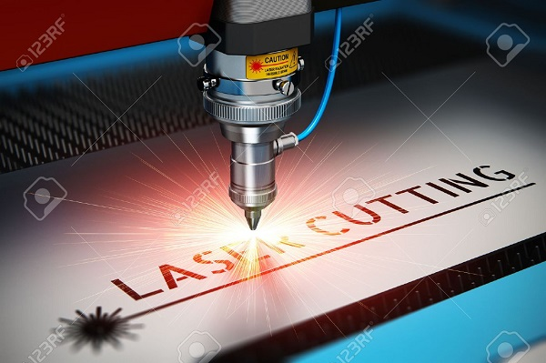
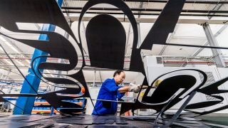

Plate laser cutting
One of the our priority directions activity on the Ukrainian market is provision of services on metal cutting with laser. We use one of the most powerful and most up-to-date laser machines that allows us cutting stainless steel with thickness up to 15 mm, aluminum – up to 8 mm and black metal up to 20 mm. Due to maximum productive capacity and high quality features, the equipment of our metalworking complex perfectly suits for both processing of individual orders and big batches of products. Along with the automation of production, an important element for us still remains the professional approach and careful attitude of the employees to the laser cutting results.
Technology of plate metal laser cutting
Metalworking with laser is an automated and highly-technological process that has a range of important advantages if compared to other ways of metal cutting:
Optional part configuration – the geometric form of parts and part contour complexity level, designed for cutting by laser, are actually restricted only by imagination of designer or design engineer. The technology of metal laser cutting allows making in the material openings of very small size, with diameter from 1 mm. Quality cutting surface, no residual deformation on the part – process computerization and lack of mechanical influence allows avoiding residual deformation of cutting contours, as well as minimizing temporary deformations, as during the laser cutting there are no immediate contact with the metal surface. Moreover, owing to laser temperature features the part edge tempering that enhances its strength, takes place. High precision of laser cutting equipment – there is no need in further mechanical bringing of the part to the set dimensions, as precision of laser cutting is 0.1 mm. Low material waste – laser metal cutting is performed subject to the ready schemes and drawings that makes the process almost wasteless due to minimization of trimmings and remains. Laser metal cutting allows substantial economy with small product batches as it is more practical and reasonable to perform laser metal tailoring than to additionally purchase quite expensive casting molds and dies, or matrices, especially for small-batch production. Speed and automation of laser cutting process – automated metal cutting differs from other ways with its speed that is a substantial advantage, especially for performance of large-scale industrial orders. Substantial reduction of human factor part due to production automation allows greatly optimizing expenses and simultaneously increasing precision of laser tailoring and final quality of products. Laser cutting of various metals – Laser cutting does not deform thin plate metal and is safe for materials with mirror and glazed surface. Laser ray gives opportunity for easy performance of additional constructional elements and part marking that simplifies further construction bending, folding and welding. It is also possible to perform technological laser engraving of the part.
Equipment technical capacities:
- Plate dimensions — 3000х1500 mm.
- Positioning precision — to 0.05 mm.
- Cutting width — from 0.3 to 0.65 mm.
- Cutting speed — to 10 m/min.
Maximum cutting thickness for different materials:
- black metal ≤20 mm;
- stainless steel ≤15 mm.
- aluminum ≤8
Frequently Asked Questions
- In which form it is better to send request for laser cutting estimate?
- What are the minimum opening sizes (diameters) you can cut?
- What will be the cutting width with laser metal cutting?
- Do you perform laser cutting of wood, plastic and other materials?
- Do you provide discounts for the volume?
News

December 2019
Buhler has set its targets high: simultaneously tackling two of the biggest global challenges – feeding the world’s population and ensuring mobility in 2050. Buhler’s largest production facility is located in Liyang, China. The state-of-the-art factory exemplifies why Buhler is a leader in its markets.
Continue reading
December 2019
In order to create pioneering process solutions that drive forward a smart factory environment, Bystronic is joining forces with the software specialist Kurago within the framework of an innovation partnership.
Continue reading
November 2019
Service marathon in midsummer. Logistics of the future. An appetite for innovation. A company with a long tradition at the heart of the automotive industry.
Continue reading